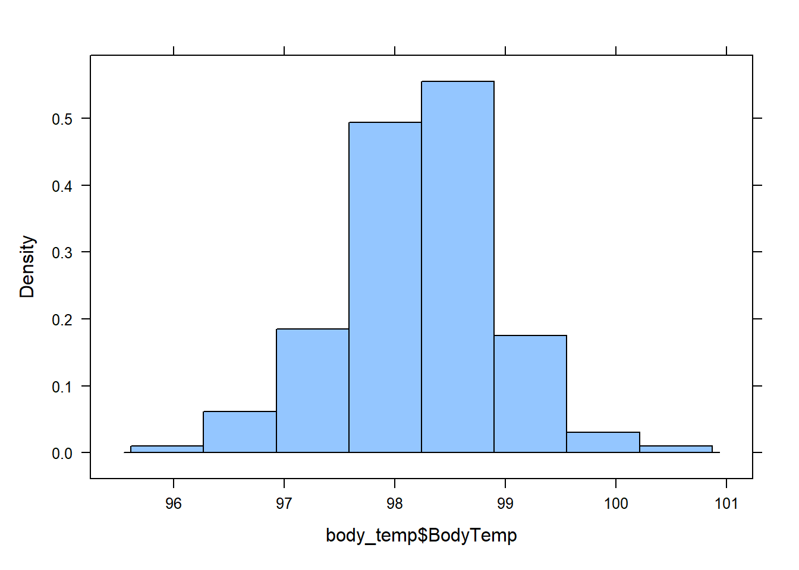

pnorm(2.041)[1] 0.9793746By the end of this lesson, you should be able to:

In baseball, a player called the “pitcher” throws a ball to a player called the “batter.” The batter swings a wooden or metal bat and tries to hit the ball. A “hit” is made when the batter successfully hits the ball and runs to a point in the field called first base. A player’s batting average is calculated as the ratio of the number of hits a player makes divided by the number of times the player has attempted to hit the ball or in other words, been “at bat.” Sean Lahman reported the batting averages of several professional baseball players in the United States. (Lahman, 2010) The file BattingAverages.xlsx contains his data.
The following histogram summarizes the batting averages for these professional baseball players:

Notice the bell-shaped distribution of the data.
Suppose we want to estimate the probability that a randomly selected player will have a batting average that is greater than 0.280. One way to do this would be to find the proportion of players in the data set who have a batting average above 0.280. We can do this by finding the number of players who fall into each of the red-colored bins below and dividing this number by the total number of players.

In other words, we could find the proportion of the total area of the bars that is shaded red out of the combined area of all the bars. This gives us the proportion of players whose batting averages are greater than 0.280.
Out of the 446 players listed, there are a total of 133 players with batting averages over 0.280. This suggests that the proportion of players whose batting average exceeds 0.280 is:
\[\displaystyle{\frac{133}{446}} = 0.298\]
Alternatively, we can use the fact that the data follow a bell-shaped distribution to find the probability that a player has a batting average above 0.280.
The bell-shaped curve superimposed on the histogram above is called a density curve. It is essentially a smooth histogram. Notice how closely this curve follows the observed data.
The density curve illustrated on the histogram of the batting average data is special. It is called a normal density curve. This density curve is symmetric and has a bell-shape.
The normal density curve is also referred to as a normal distribution or a “Gaussian” distribution (after Carl Friedrich Gauss.)
The normal density curve appears in many applications in business, nature, medicine, psychology, sociology, and more. We will use the normal density curve extensively in this course.
All density curves, including normal density curves, have two basic properties:
Because of these two properties, the area under the curve can be treated as a probability. If we want to find the probability that a randomly selected baseball player will have a batting average between some range of values, we only need to find the area under the curve in that range. This is illustrated by the region shaded in blue in the figure below.

A normal density curve is uniquely determined by its mean, \(\mu\), and its standard deviation, \(\sigma\). So, if random variables follow a normal distribution with a known mean and standard deviation, then we can calculate any probabilities related to that variable by finding the area under the curve.
When the mean of a normal distribution is 0 and its standard deviation is 1, we call it the standard normal distribution.
We will return to this example later, and we will find the area shaded in blue.
In Ghana, the mean height of young adult women is normally distributed with mean \(159.0\) cm and standard deviation \(4.9\) cm. (Monden & Smits, 2009) Serwa, a female BYU-Idaho student from Ghana, is \(169.0\) cm tall. Her height is \(169.0 - 159.0 = 10\) cm greater than the mean. When compared to the standard deviation, she is about two standard deviations (\(\approx 2 \times 4.9\) cm) taller than the mean.
The heights of men are also normally distributed. The mean height of young adult men in Brazil is \(173.0\) cm (“Oramento,” 2010), and the standard deviation for the population is \(6.3\) cm. (Castilho & Lahr, 2001) A Brazilian BYU-Idaho student, Gustavo, is \(182.5\) cm tall. Compared to other Brazilians, he is taller than the mean height of Brazilian men.
When we examined the heights of Serwa and Gustavo, we compared their height to the standard deviation. If we look carefully at the steps we did, we subtracted the mean height for people of the same gender and nationality from each individual’s height, respectively.
This shows how much taller or shorter the person is than the mean height. In order to compare the height difference to the standard deviation, we divide the difference by the standard deviation. This gives the number of standard deviations the individual is above or below the mean.
For example, Serwa’s height is 169.0 cm. If we subtract the mean and divide by the standard deviation, we get \[z = \frac{169.0 - 159.0}{4.9} = 2.041\] We call this number a \(z\)-score. The \(z\)-score for a data value tells how many standard deviations away from the mean the observation lies. If the \(z\)-score is positive, then the observed value lies above the mean. A negative \(z\)-score implies that the value was below the mean.
We compute the \(z\)-score for Gustavo’s height similarly, and obtain \[z = \frac{182.5 - 173.0}{6.3} = 1.508\] Gustavo’s \(z\)-score is 1.508. As noted above, this is about one-and-a-half standard deviations above the mean. In general, if an observation \(x\) is taken from a random process with mean \(\mu\) and standard deviation \(\sigma\), then the \(z\)-score is \[z = \frac{x -\mu }{\sigma}\]
The \(z\)-score can be computed for data from any distribution, but it is most commonly applied to normally distributed data.
Heights of women (or men) in a particular population follow a normal distribution. Most people’s heights are close to the mean. A few are very tall or very short. We would like to make a more precise statement than this.
For any bell-shaped distribution,
This is called the 68-95-99.7% Rule for Bell-shaped Distributions. Some statistics books refer to this as the Empirical Rule.

Approximately 68% of the observations from a bell-shaped distribution will be between the values of \(\mu -~\sigma~\)and \(\mu +~\sigma\). Consider the heights of young adult women in Ghana. We expect that about 68% of Ghanaian women have a height between the values of \[\mu -~\sigma = 159.0 - 4.9 = 154.1~\text{cm}\] and \[\mu +~\sigma = 159.0 + 4.9 = 163.9~\text{cm}.\]
So, if a female is chosen at random from all the young adult women in Ghana, about 68% of those chosen will have a height between 154.1 and 163.9 cm. Similarly, 95% of the women’s heights will be between the values of \[\mu - 2\sigma = 159.0 - 2(4.9) = 149.2~\text{cm}\] and \[\mu + 2\sigma = 159.0 + 2(4.9) = 168.8~\text{cm}.\]
Finally, 99.7% of the women’s heights will be between \[\mu - 3\sigma = 159.0 - 3(4.9) = 144.3~\text{cm}\] and \[\mu + 3\sigma = 159.0 + 3(4.9) = 173.7~\text{cm}.\]
If a \(z\)-score is extreme (either a large positive number or a large negative number), then that suggests that that observed value is very far from the mean. The 68-95-99.7% rule states that 95% of the observed data values will be within two standard deviations of the mean. This means that 5% of the observations will be more than 2 standard deviations away from the mean (either to the left or to the right).
We define an unusual observation to be something that happens less than 5% of the time. For normally distributed data, we determine if an observation is unusual based on its \(z\)-score. We call an observation unusual if \(z < -2\) or if \(z > 2\). In other words, we will call an event unusual if the absolute value of its \(z\)-score is greater than 2.

An important part of the practice of statistics is finding areas under a normal curve. The area under a normal curve, say, to the left of a value, gives the probability of obtaining an observation less than (or equal to) that value. This is an example of converting a value to an area. It is also important to convert an area to a value. For example, if you want to find the 40th percentile for data that follow a normal distribution, you find the value of the observation such that the area (under the curve) to the left of this value is 0.40.
The Normal Probability Applet is a visualization program offering statistics students insights and computations for the relationship between \(z\)-scores and areas under the standard normal curve. You can find a link to this applet here. This app is also compatible to use on your phone, iPad, and other mobile devices. The app is stored at . If you want a copy you can open from your desktop, just right click the link and save it to your computer.
To use this applet, follow these instructions:
Using this applet we can calculate proportions and probabilities based on the area under the normal curve. For the following examples, please open the Normal Probability Applet and practice using it to find areas under the curve.
The Normal Probability Applet is nice for visualizing areas under the curve. However, it has significant limitations. In this class, we will use R to do the heavy lifting. The pnorm(x, \(\mu\), \(\sigma\)) function calculates areas under the curve the normal distribution with mean, \(\mu\), and standard deviation, \(\sigma\), for a given x. The p in pnorm() stands for probability and norm obviously stands for the normal distribution.
By default, pnorm() gives the area of the curve to the LEFT of the value, \(x\), for a normal distribution with a mean, \(\mu\), and standard deviation, \(\sigma\).
We can calculate probabilities directly in the original units of the data, or use the z-score with a \(\mu=0\) and \(\sigma=1\): pnorm(z).
NOTE: pnorm() has a default value for the mean, \(\mu = 0\) and standard deviation, \(\sigma = 1\) so we don’t have to input those values when we use a z-score with the standard normal distribution.
We will use the example of Serwa’s height to find the proportion of young Ghanaian women who are shorter than Serwa. Recall that for the height of young Ghanaian women, the population mean is 159.0 cm and the population standard deviation is 4.9 cm. Serwa’s height is 169.0 cm. We found the \(z\)-score of Serwa’s height as:
\[z = \frac{x -\mu}{\sigma} = \frac{169.0- 159.0}{4.9} = 2.041\]
What proportion of young Ghanaian women reach a height that is at or below 169 cm? To answer this question, we need to find the area under a normal density curve (i.e. the probability) that is to the left of \(z = 2.041\).
To find the area under a normal curve corresponding to a \(z\)-score of \(2.041\), do the following:
pnorm(2.041)[1] 0.9793746NOTE: The area to the left of our chosen \(z\)-score is also the probability that a randomly selected woman will be shorter than Serwa. The probability that a randomly selected Ghanaian woman will be shorter than Serwa is \(0.979\), or \(97.9\%\).
We now return to the example of the baseball batting averages. We want to find the probability that a randomly selected player will have a batting average that is above 0.280. The population mean is 0.261 and the population standard deviation is 0.034. We can use this information to find a \(z\)-score. Then we use the applet to find the area under the normal curve to the right of this \(z\)-score.
\[z = \frac{x -\mu}{\sigma} = \frac{0.280 - 0.261}{0.034} = 0.559\]
x <- 0.280
mu <- 0.261
sigma <- 0.034
z <- (x-mu)/sigma
# Area to the LEFT:
pnorm(x, mu, sigma)[1] 0.7118589## Equivilantly:
pnorm(z)[1] 0.7118589# Area to the RIGHT
1-pnorm(x, mu, sigma)[1] 0.28814111-pnorm(z)[1] 0.2881411Using the Applet, type the \(z\)-score of \(0.559\) in one of the boxes below the horizontal axis in the applet. Click on the areas under the curve until only the region on the right is highlighted in blue.

The area under the curve to the right of \(z = 0.559\) is \(0.288\). This is the probability that a randomly selected player will have a batting average that is greater than 0.280. (Note: It is a coincidence that the area, 0.288, is close to the batting average of 0.280. There is no significance in this.)
Notice that the area shaded in blue above 0.288 is very close to the area we found when we looked at the area represented by the bars of the histogram 0.298 that was shaded in red above.
The normal probability applet allows us to find the probability of being between two values as long as they are on opposite sides of the mean and equally distanced from the mean. By calculating two z-scores, one for each value, and then shading the area between them on the applet, we can find the probability. This is severely limiting.
Below, we demonstrate how to find the area between any two values in a normal distribution.
What is the probability that a randomly selected young Ghanaian women will be between 150.0 cm and 163.0 cm tall? Recall that the average height for young Ghanaian women is \(\mu=159.0\) cm and the population standard deviation is \(\sigma=4.9\) cm.
We want to find the probability that a randomly selected woman’s height is between \(150.0\) cm and \(165.0\) cm. To do this we find the \(z\)-score for both values:
\[z_1 = \frac{x- \mu}{\sigma} = \frac{150.0 - 159.0}{4.9} = -1.837\] \[z_2 = \frac{x - \mu}{\sigma} = \frac{165.0 -159.0}{4.9} = 1.22\]
We now answer the question by finding the area under the normal density curve (i.e. the probability) to the left of \(z = 1.22\) which is \(0.8888\) and also the area under the normal density curve to the left of \(z = -1.837\) which is \(0.033\). To find the area between \(z = 1.22\) and \(z = -1.837\), we subtract the smaller area from the larger.
\[0.8888 - 0.0331 = 0.8557\]
So the probability that the height of a randomly selected young Ghanaian woman will be between 150.0 cm and 165.0 cm is \(0.8558\). This is the same as the proportion of all young Ghanaian women who are between 150.0 and 165.0 cm tall.
To find the probability of being between any 2 numbers for a normal distribution with mean, \(\mu\), and standard deviation, \(\sigma\), we can use the following R code:
value1 <- 150
value2 <- 165
mu <- 159
sigma <- 4.9
pnorm(value2, mean = mu, sd = sigma) - pnorm(value1, mean = mu, sd = sigma)[1] 0.8564917NOTE: Value 1 is the lower of the two values and Value 2 is the higher value. Also, this answer is slightly different than above due to when you round. This answer is more accurate because we rounded at the end of the probability calculations rather than rounding the z-scores, then calculating probabilities.
A percentile is a number such that a specified percentage of the population are at or below this number. For example, the 25th percentile is the number in a data set that is greater than or equal to 25% of all the values in the data set.
We can find percentiles for a given dataset by using the quantile() function as described in the chapter on summarizing data
However, to calculate percentiles from a normal distribution, we use the qnorm(percentile, mu, sigma) function.
NOTE: R typically uses the word quantile when referring to percentiles. So the \(q\) in qnorm() stands for quantile.
To find the height of a Ghanaian woman corresponding to the 90th percentile:
qnorm(.90, mean = 159, sd = 4.9)[1] 165.2796The 90th percentile of the heights averages is 165.2796. That means that 90% of the Ghanaian women are shorter than 165.2796 cm tall.
Consider the data on the batting averages of Major League Baseball players. The histogram of the batting averages showed a distinct bell-shaped curve.

Later in the course, we will learn a better way to assess normality. For now, we use histograms as a rough way to look for symmetry.
Here is a refresher of how to make a Histogram in R
For more detailed instructions revisit Summarizing Data
library(rio)
library(mosaic)
bat_avg <- import("https://github.com/byuistats/Math221D_Course/raw/main/Data/BattingAverages.xlsx")histogram(data$column_name) where column_name refers to the column you would like to use to create a histogram.histogram(bat_avg$BattingAvg)
histogram(bat_avg$BattingAvg, main = "Distribution of Batting Averages", xlab = "Batting Average", ylab = "", col = 2)
A group of researchers led by Philip A. Mackowiak, MD, conducted a study to assess the true mean body temperatures of healthy adults. They selected n = 148 subjects between the ages of 18 and 40 years old, representative of the general population.
Each volunteer was given a physical to assure that they were not ill at the time of the data collection. Their axillary (under the arm) body temperature was measured and reported in a paper published in the Journal of the American Medical Association. [1] These data were extracted and are presented in the file BodyTemp. The body temperatures are given in degrees Fahrenheit.
library(rio)
library(mosaic)
body_temp <- import("https://github.com/byuistats/Math221D_Course/raw/main/Data/BodyTemp.xlsx")
histogram(body_temp$BodyTemp)
favstats(body_temp$BodyTemp) min Q1 median Q3 max mean sd n missing
96.2 97.8 98.3 98.7 100.8 98.23446 0.7375924 148 0The sample mean is 98.23, sample standard deviation is 0.738, and sample size is n = 148.
A normal density curve is symmetric and bell-shaped with a mean of \(\mu\) and a standard deviation of \(\sigma\). The curve lies above the horizontal axis and the total area under the curve is equal to 1. A standard normal distribution has a mean of 0 and a standard deviation of 1.
A z-score is calculated as:
\[\displaystyle{z = \frac{\text{value}-\text{mean}}{\text{standard deviation}} = \frac{x-\mu}{\sigma}}\]
A z-score tells us how many standard deviations above (\(+Z\)) or below (\(-Z\)) the mean (\(\mu\)) a given value (\(x\)) is.
To calculate probabilities for a normal distribution with mean, \(\mu\) and standard deviation \(\sigma\) for a given observation \(x\), use pnorm(x, mu, sigma) or 1-pnorm(x, mu, sigma) to get the desired probability (below, above). Alternatively, calculate the \(z\)-score and use pnorm(z) or 1-pnorm(z). In every case, the probability is given by the Area under the curve.
The 68-95-99.7% rule states that when data are normally distributed, approximately 68% of the population lies within \(z=1\) standard deviation (\(\sigma\)) from the mean, approximately 95% of the data lie within \(z=2\) standard deviations from the mean, and approximately 99.7% of the data lie within \(z=3\) standard deviations from the mean. For example, this rule approximates that 2.5% of observations will be less than a z-score of \(z=-2\).
Percentiles can be calculated using the qnorm(percentile, mu, sigma) function.